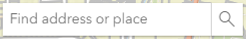

You will mainly use the two buttons in the top, right corner.
The “Select Feature” button is active when the page loads. Use it to click on a parcel and see parcel details in a popup. Only eligible parcels are shown on the map.
To run a height analysis, click the “Draw a Point” button and then click the parcel of interest. To analyze another parcel, click this button again and place a point on a new parcel.
Using the search bar will place you at the selected address but you will still need to click the "Draw a Point" button and select an eligible parcel.
Since some zoning districts measure height in feet and others in stories, both are shown in the results tables.